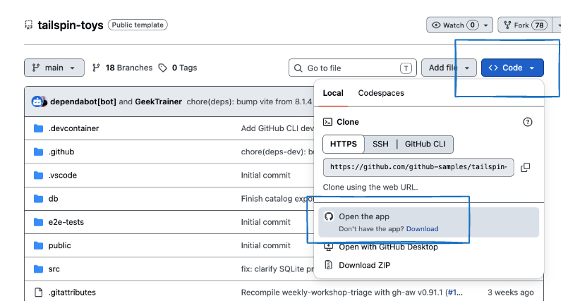
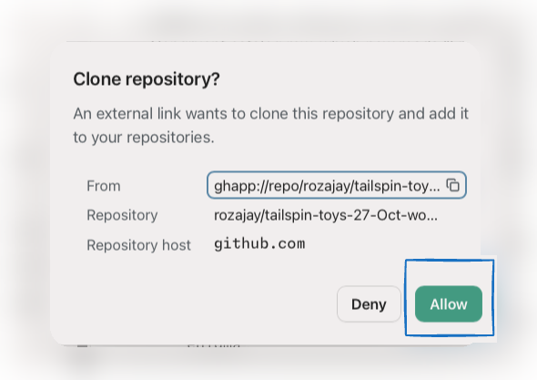
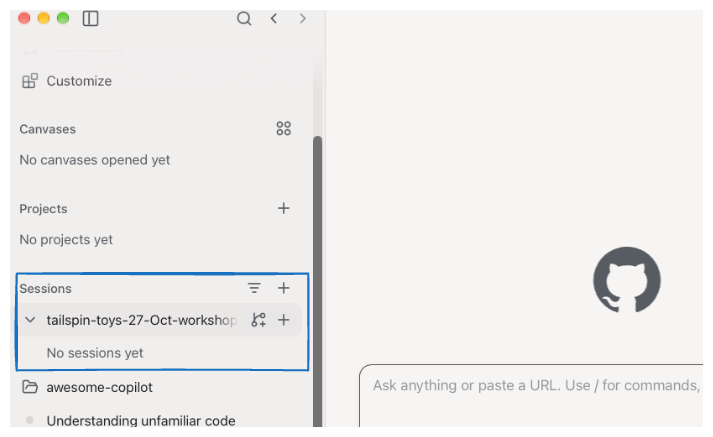
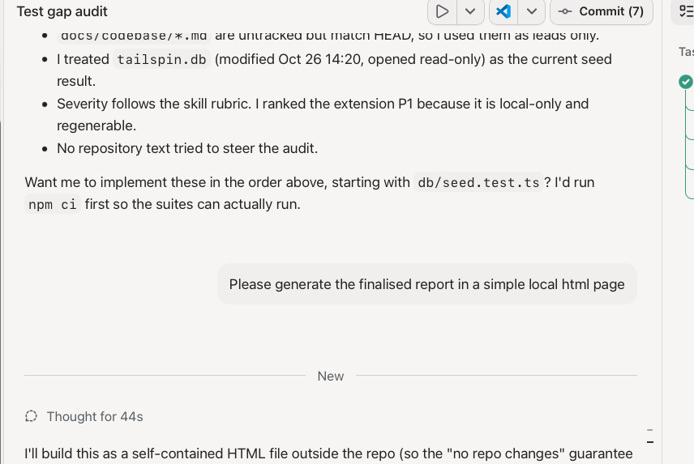
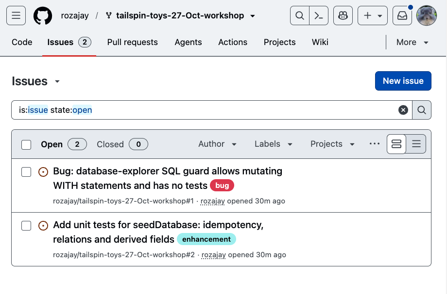

So whatToday you will learn to launch issue-driven sessions, create merge-ready pull requests and automate recurring tasks.
Our focus today
1Issue-powered sessions
Launch Copilot sessions directly from GitHub issues to turn planned work into action.
2Merge-ready pull requests
Implement, test and refine changes with Copilot to prepare pull requests for merging.
3Automate repeat work
Set up automations to handle recurring tasks without repeating manual steps.
What you need
GitHub Copilot access
A GitHub account with access to GitHub Copilot.
The GitHub Copilot app
Installed on your computer and signed in with that account.
Tailspin Toys issues
Have the issues you created in your Tailspin Toys repository during the previous workshop ready to use.
Duration: 15 minutes
Meet the repository: Tailspin Toys
Today's repositorygithub-samples / tailspin-toys ↗A public sample site for a fictional game crowdfunding company, built with Astro and a local
SQLite database. Treat it as code you have never seen before.
1. Create your own copy
Work in your own repository so you can raise issues later. Open
github-samples/tailspin-toys ↗, choose
Use this template → Create a new repository, keep the name
tailspin-toys and create it in your own account. GitHub may also open a few starter
issues in the new repository. You can ignore them.
2. Open your repository in the app

Code → Local → Open the app. Use this menu on your new repository.
3. Allow the repository to be cloned

Confirm your repository → Allow. Your own repository name appears in the dialog.
4. Find the repository in Sessions

Sessions → your repository. The name in this screenshot may differ from yours.
5. Ask Copilot to run the app locally
Start a new session for your tailspin-toys repository. Check that
Current checkout is selected, paste the prompt below and click the send arrow.
please run this app locally
Send the prompt → Copilot starts a session to run the app locally.
6. Explore the running app
Once Copilot confirms the app is running, open the local URL it provides
(http://localhost:4321/ in this recording). Browse Featured Games, click
View details on a game, then use Back to all games to return to the
catalogue.
Open the local app → View details → Back to all gamesDuration: 20 minutes
Acquire codebase knowledge
So whatTurn an unfamiliar repository into an evidence-backed map you can
use to plan better tests.The skill investigates the codebase, records what it can verify and flags what still needs an answer.
Awesome Copilot is a community library of guides, agents, skills and
tools for GitHub Copilot. Today we use one of its skills to understand Tailspin Toys.
Explore the library ↗
1Ask Copilot to onboard you with the skill
Paste the onboarding prompt with the skill link → Send
What the skill produces
One repository map. Seven documents in docs/codebase/.
What's it built with?STACK.md
Languages, runtimes, frameworks and dependencies.
Where does everything live?STRUCTURE.md
Folders, entry points and key files.
How does it fit together?ARCHITECTURE.md
Components, boundaries and data flow.
How is code written here?CONVENTIONS.md
Coding patterns and error handling.
What does it connect to?INTEGRATIONS.md
Databases, external services and configuration.
How is it tested?TESTING.md
Test tools, organisation and mocking patterns.
Where should we look next?CONCERNS.md
Evidence-backed risks, technical debt and coverage gaps — a starting point for our test planning.
[TODO] means unknown, not assumed.
2Review the generated codebase documents
Explore the generated documents in docs/codebase/.
Duration: 25 minutes
Find test gaps. Add meaningful coverage.
So whatA passing test suite does not prove every important behaviour.Use the codebase map to find missing or weak tests, then turn one verified gap into a regression test.
1Meet the Test Gap Audit skill5 min
Open Test Gap Audit on Awesome Copilot ↗. This skill compares code
paths with what existing tests actually assert. It stays read-only until you
explicitly ask it to add tests.
1Map the behaviour
Inspect source, existing tests and repository test conventions.
2Rank the gaps
Prioritise by impact, with evidence and concrete test scenarios.
3Prove the behaviour
Prefer meaningful assertions over a higher coverage percentage alone.
2Run a read-only audit of Tailspin Toys8 min
Read the report before acting. A file without a directly matching test may still be covered indirectly.
If the audit cannot finish in this session, use its list of areas not deeply inspected for a follow-up pass.
3Generate a local HTML audit report2 min
Once the audit is complete, ask Copilot to turn the finalised findings into a simple local HTML page.
Save the report outside the repository to keep the audited files unchanged, then open it in your browser.

Keep the priorities, source evidence and checks run or skipped visible in the report.
Generating the report does not authorise implementing the suggested fixes or tests.
4Create GitHub issues for the P1 gaps10 min
The recording asks for two issues because that audit found two P1 gaps. Your audit may rank gaps
differently, so create one issue per P1 gap in your report.

Example result: both P1 gaps are published as GitHub issues. Your titles will differ.Duration: 10 minutes
From unfamiliar code to meaningful tests
The takeawayUnderstand first. Audit with evidence. Add tests that prove behaviour.Copilot helps investigate and implement. You review the evidence, choose the gap and check the results.
The loop you can reuse
Run → Map →
Audit → Choose →
Test → Verify
Repeat for the next behaviour or area that needs deeper inspection.
Choose one unfamiliar area, map it, audit its tests and add one reviewed regression test.
Keep the change focused, record the checks and share unresolved questions with your team.